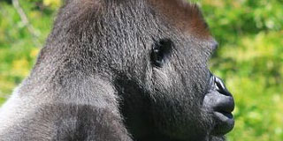

Ce site ne parlant que de grands singes cache dans son antre un répertoire CSS de plusieurs technologies qui permettront de devenir un expert.
Les hominidés (Hominidae) sont une famille de primates simiiformes regroupant les genres actuels orang-outan, gorille, chimpanzé et Homo1,2,3. S'y trouvent également un certain nombre de genres éteints apparentés, ancêtres ou plus souvent collatéraux des ancêtres des quatre genres actuels.
Cette famille admet pour groupe frère les Hylobatidés, d'autres singes sans queue, couramment appelés gibbons, comprenant quatre genres et une vingtaine d'espèces. Ensemble, tous ces primates forment la super-famille des hominoïdes, également appelés grands singes.
Selon la Liste rouge mondiale des espèces menacées de l'UICN, cinq espèces d'hominidés sur sept sont menacées d'extinction4.
L'expression « grands singes » vient plutôt de la primatologie et de l'éthologie, qui étudient le comportement des animaux dans la nature. C'était, au départ, un concept formé pour isoler certaines espèces au sein du groupe des singes, qui était polyphylétique car il n'incluait pas l'Homme. Il s'agissait, à l'origine, de ne considérer que les orang-outans, les gorilles, les chimpanzés, ainsi que leurs ancêtres.
Plus tard, on a admis le caractère paraphylétique de cette définition, c'est-à-dire du caractère arbitraire de l'absence de l'homme, avec la révision de la classification phylogénétique des Hominoidea. Par ailleurs, la découverte des fossiles d'Orrorin tugenensis, de Toumaï et d'Ardi, de plus en plus proches chronologiquement de l'ancêtre commun des chimpanzés et des humains, ont amené les préhistoriens et paléontologues à s'intéresser aux espèces actuelles de grands singes.
L'expression « grands singes » est donc utilisée actuellement pour nommer l'ensemble des singes sans queue qui constituent la super-famille des Hominoidea, comme équivalent de l'anglais « ape », qui s'oppose dans cette langue à « monkey », qui ne désigne que les singes à queue.
Évolution de la classification
Dans les classifications anciennes5, se basant sur les ressemblances morphologiques entre les espèces, la famille des Hominidae ne comprenait que le genre Homo, les plus grands singes étant regroupés dans la famille des Pongidae considérée comme un groupe paraphylétique, correspondant à un grade évolutif que l'homme a su dépasser et non comme un groupe naturel partageant un ancêtre commun.
La compréhension de la phylogénie a conduit à corriger cette classification6,7 : tous les plus grands singes (dont les humains) ont été regroupés dans la famille des Hominidae, qui admet pour groupe frère les Hylobatidae ou gibbons, et qui devient ainsi monophylétique. De plus, les grands singes africains, gorille et chimpanzé, sont plus étroitement apparentés à l'homme qu'à l'orang-outan et forment donc la sous-famille des Homininae.
Enfin, le chimpanzé apparait comme le groupe frère de l'homme, tous deux à égale distance du gorille.
La classification moderne dans laquelle l'homme n'est plus isolé dans une famille propre met de très longues années à s'imposer dans la communauté scientifique des primatologues et des paléoanthropologues, mais également dans les programmes d'enseignement ou dans les ouvrages et revues de vulgarisation. Parmi de nombreuses classifications proposées, montrant quelques différences quant au choix des appellations des différents niveaux hiérarchiques, s'est imposée la classification de Jeheskel Shoshani (en)1.
Gorilles Dos Argenté

C'est le plus grand et le plus fort de tous les singes anthropoïdes.
Le nombre d'espèces ou de sous espèces ne semble pas maîtrisé mais on connaît :
Le gorille des plaines occidentales (gorilla gorilla gorilla) qui vit à l'ouest de l'Afrique centrale, au Cameroun, Gabon, Congo et Guinée équatoriale.
Le gorille des plaines orientales (gorilla gorilla graueri) qui est beaucoup plus foncé et qui habite à l'Est du Zaïre, des plaines bordant la rivière jusqu'aux montagnes.
Le gorille des montagnes (gorilla gorilla beringei) qui est noir et qui possède une fourrure plus longue vit sur les volcans du Virunga au Zaïre, Rwanda et Ouganda.
Gibbon
Le gibbon fait en effet également partie des singes anthropoïdes mais contrairement au chimpanzé, bonobo, gorille et orang-outan qui font partie du genre Pongidés, le gibbon fait partie du genre des Hylobatidés. Genre qu'il partage avec le siamang.
Le gibbon vit dans les forêts d'Asie du sud est. Il est caractérisé par ses longs bras avec lesquels il se balance de branche en branche. Arboricole et très agile le gibbon n'a donc presque pas de prédateur (hormis l'homme).
Le nom « orangutan » (orang-outan ou orang-outang en français) signifie « l'homme de la forêt ». Il vient du Malais et du Bahasa Indonésien (langue officielle de la république d'Indonésie) : orang (l'homme) et hutan (la forêt).
Les orangs-outans sont des créatures extrêmement intelligentes qui ont sans nul doute la capacité de raisonner et de réfléchir. Les similitudes que nous partageons avec eux sont sans appel...
The monkeys
Another thing that makes chimpanzees and humans remarkable is our culture, or all the learned traditions, behaviors, and values passed through generations. Because primates learn from other members in their social groups, different geographical populations of chimpanzees and humans exhibit predispositions to different behaviors, making groups culturally distinct from one another.
Bonobo
Aussi appelé chimpanzé pygmée, le bonobo a été longtemps considéré comme une sous espèce de chimpanzé. Il lui ressemble mais est plus élancé et moins robuste.
Il a la peau du visage noire et ses poils partent latéralement de chaque côté du front. Végétarien, il ne chasse pas.
Il vit en groupe le long du fleuve Congo en République Démocratique du Congo.
Chimpanzees
Les chimpanzés vivent dans les forêts africaines. Il existe 4 sous espèces de chimpanzés.
Les chimpanzés sont très sociaux ; ils vivent en communauté pouvant atteindre une centaine d'individus dirigée par un mâle dominant. Le rang d'un membre dans la hiérarchie du groupe dépend de sa naissance et de sa sociabilité, notamment au cours des séances d'épouillage mutuel.
The monkeys
Another thing that makes chimpanzees and humans remarkable is our culture, or all the learned traditions, behaviors, and values passed through generations. Because primates learn from other members in their social groups, different geographical populations of chimpanzees and humans exhibit predispositions to different behaviors, making groups culturally distinct from one another.
The monkeys
Another thing that makes chimpanzees and humans remarkable is our culture, or all the learned traditions, behaviors, and values passed through generations. Because primates learn from other members in their social groups, different geographical populations of chimpanzees and humans exhibit predispositions to different behaviors, making groups culturally distinct from one another.